Mental Map-Preserving Visualization through a Genetic Algorithm
Mojiborrahman Dehvari, Chuan-Kai Yang and Enrico Armando
2021
Abstract
Visualize information by curating data into a form that makes it easier to identify and understand the trends is quite an interesting research topic. This research focuses on producing an animation of aesthetically pleasing two-dimensional (2D) undirected graphs. The data are further analyzed for developing a web-based application giving users the ability to control and create the animation of a graph. To make it easier to understand the animation of a graph, the changes between the displays of the previous and the following periods are set as small as possible, allowing a user to grasp the differences of the graph’s structure faster. A genetic algorithm-based undirected graph drawing that minimizes both the aesthetic criteria and mental map cost is proposed in this research to tackle this problem. Furthermore, based on our experiments, we could find the best period to start with, so we do not necessarily need to start from the first period to calculate the animation result. Our experiment results proved that a smoother animation could be achieved, and information is better preserved throughout the animation. Our algorithm can be applied to every dataset, as long as the relationship between two entities can be calculated, and we used a video game dataset as our main dataset.
Method
| 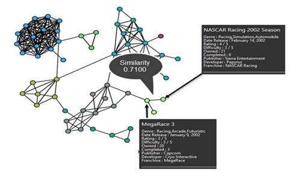 |
the system architecture is shown in Figure 2.
| 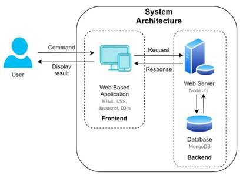 |
the webserver will receive an input filter as a request from the front end and retrieve the necessary data from the database during the calculations. The retrieved data will then be calculated using our algorithm to produce the best position for each node period by period and then stored in the database. Our simplification algorithm works by combining several similar nodes (nodes of the same genre) into one larger node by checking it against a threshold. (figure 3)
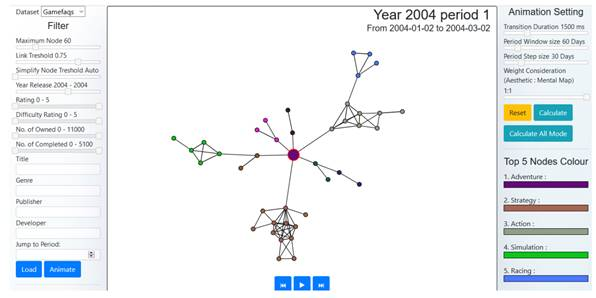
The dataset used for this research was collected from GameFAQs.com on 24 April 2019. It consists of 63,952 games with English titles from 1985 to 2019. we defined the relationship between each data (node) using similarity calculations. The higher the value, the more similar the two nodes are. The Equation below shows how we define our similarity function.
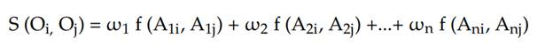
Figure 4 is an example to show our transition animation procedure from the first period to the next period. The user can see the removal and insertion changes much better than changing them simultaneously, thus preserving the user’s mental map.
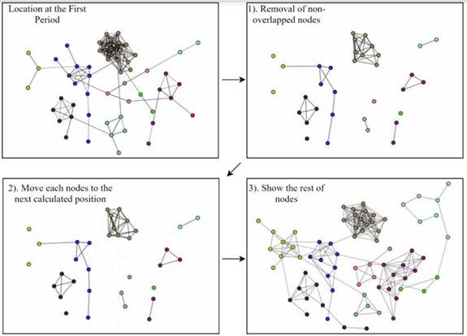
the input of our GA algorithm is a graph G = (V, E), where V is the set of nodes, and E is the set of edges. We use several aesthetic criteria that will be minimized, and they are composed by a weighted sum. A user will define these weights to adjust the graph drawing. equation (2) is our fitness function.
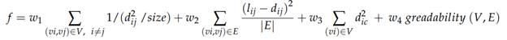
The genetic operator in this paper consists of three methods:
Crossover, Mutation, and Inversion. We implemented a relinking path algorithm
at each generation with a certain percentage. With this research, we want to
verify if a path relinking could work with GA to get a better drawing result.
Figure 5 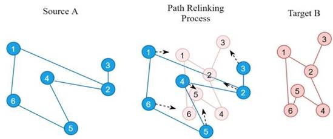
shows how our relinking path process works.
Experimental Results
We started our experiment by using several methods to consider the weight of the mental maps. The first method was to consider the mental map weight at the initial generation. The second method was to consider the mental map weight when the current generation reached a certain point. The last method was to consider changing the mental map weight gradually across generations.
| 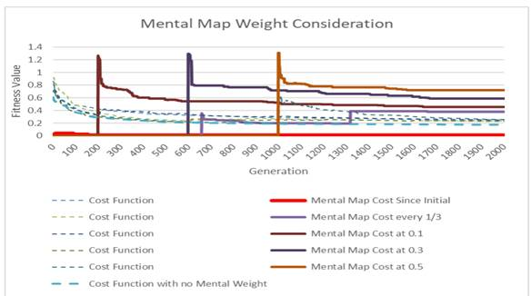 |
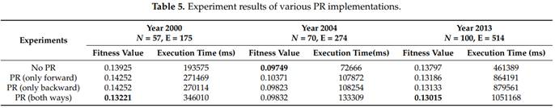
Our following experimental results were about implementing the
Path Relinking (PR) algorithm in our system, understanding of using mental map
preserve, and procrustes statistical analysis.
| 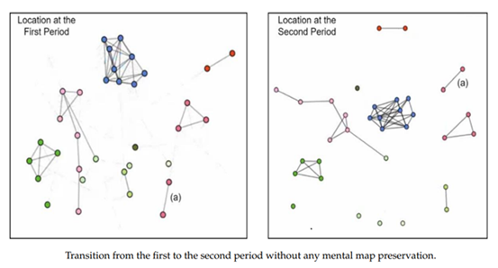 |
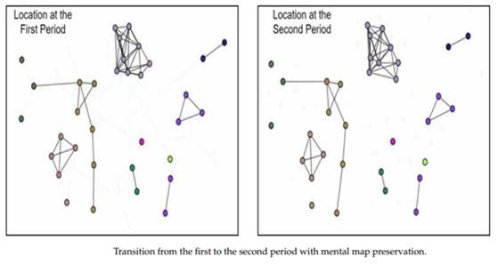
| 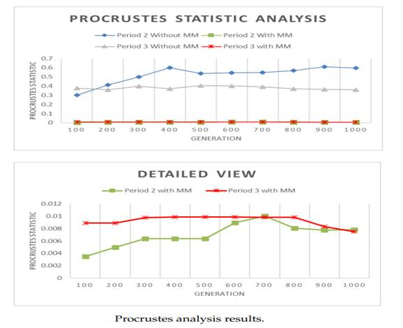 |
| 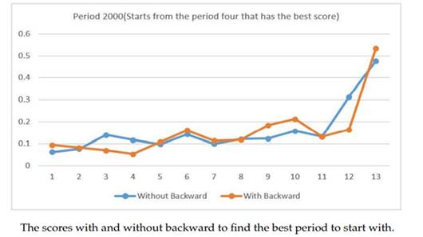 |
| 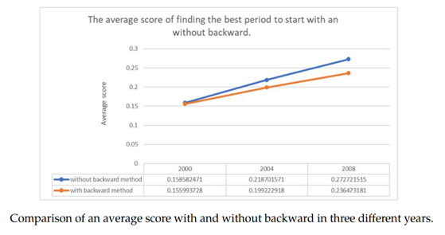 |
Conclusions
In this research, we developed a web-based application that can produce and show the smooth animation of multiple undirected graphs. We proposed a mental map-preserving algorithm for an undirected graph using a GA that can be applied to all datasets as long as the relationship can be calculated and develop a web-based application for users to control and create the animation of graphs. Our research concluded that a smoother animation can be achieved by preserving a user’s mental map, and the information was indeed better preserved throughout the animation. Future research could be done to reduce the calculation time and to use more efficient programming languages such as Python to help improve the mental map preservation, especially when too many nodes are involved.